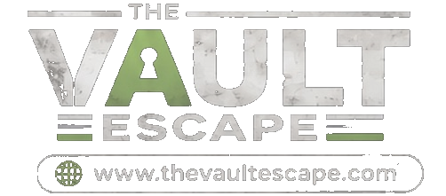

Politica de cookies
Ultima actualizacion: 8 de agosto de 2026.
Resumen
The Vault Escape no usa actualmente cookies analiticas ni publicitarias propias. La web puede utilizar cookies tecnicas, almacenamiento local, IndexedDB o tecnologias equivalentes para mantener la sesion, recordar preferencias, instalar la aplicacion web y guardar datos necesarios de funcionamiento.
Que son las cookies
Una cookie es un pequeno archivo o tecnologia similar que permite guardar y recuperar informacion en tu navegador. Algunas son necesarias para que una web funcione; otras sirven para analitica, publicidad o personalizacion avanzada.
Cookies y tecnologias usadas
| Tipo | Finalidad | Base |
|---|---|---|
| Tecnicas y de seguridad | Mantener el funcionamiento de la web, la app instalada y recursos en cache. | Necesarias para prestar el servicio. |
| Autenticacion | Permitir el inicio de sesion con Google mediante Firebase y conservar la sesion en el navegador. | Consentimiento al iniciar sesion. |
| Preferencias locales | Recordar estados de interfaz, filtros o datos funcionales del navegador cuando sea necesario. | Interes legitimo y configuracion solicitada por la persona usuaria. |
| Analitica o publicidad | No se usan actualmente con fines de seguimiento comercial. | No aplica mientras no se incorporen. |
Servicios de terceros
Google/Firebase puede utilizar tecnologias necesarias para autenticar la cuenta y mantener la sesion. GitHub Pages aloja la web. Si se cargan mapas, fuentes u otros recursos externos, esos proveedores pueden recibir datos tecnicos como IP o informacion del navegador para entregar el recurso.
Como gestionar cookies
Puedes borrar o bloquear cookies y almacenamiento local desde la configuracion de tu navegador. Si bloqueas elementos tecnicos, algunas funciones como iniciar sesion, mantener favoritos o usar la app instalada pueden dejar de funcionar correctamente.
Cambios futuros
Si en el futuro se anaden cookies de analitica, publicidad o seguimiento no necesario, se actualizara esta politica y, cuando corresponda, se pedira consentimiento antes de activarlas.